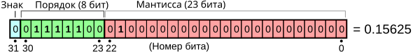
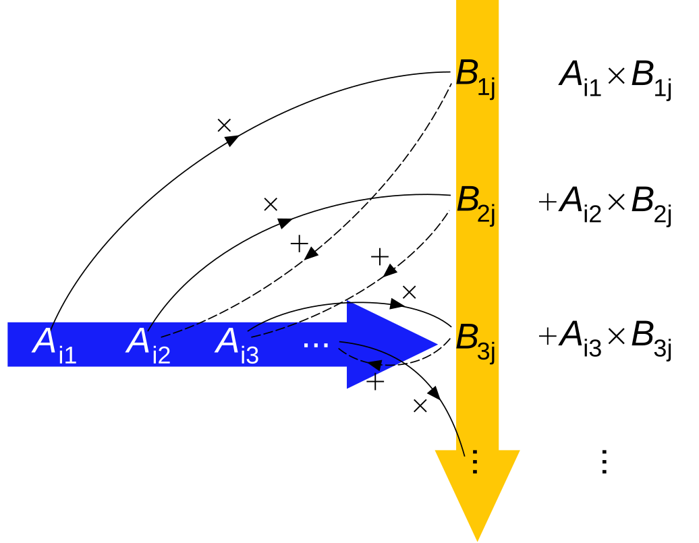

Материалы к занятиям: https://zenderro.github.io/programming-semester-5/ email: andrey.zenzinov@math.msu.ru
Плавающая точка — метод представления подмножества рациональных чисел (бывает тип комплексных чисел с плавающей точкой):
$ x = (-1)^{ {\color{#0CC}{sign} } } · 1.\overline{ {\color{#F00} {significand} } } · 2^{ {\color{#0C2}{exponent - bias} } }$
32-битное число (float):

Смещенный порядок (biased exponent): p = exp − 127
Нормированная мантисса (normalized significand): ведущий бит опускается и считается равным единице
На картинке мантисса — $ \color{#444}{1}.01000…0 $
Подробнее на Wikipedia (и далее — про стандарт IEEE 754)
Мантисса — двоичная дробь. Не всякая десятичная дробь
представляется как конечная двоичная. 1/5 (0.2)
записывается в double как: $0.2000000000000000\color{red}{11102230246251565404236316680908203125}$
⇒ для финансовых приложений нужно
использовать десятичную запись с фиксированной точкой и строго заданными
правилами округления
Денормализованные числа — порядок = 0, но мантисса не может быть записана в нормированном виде — число записывается в денормализованном виде, что вызывает потерю точности значащих цифр.
NaN (не-число) (все биты поряка установлены) — возвращается в операциях, результат которых не определён (0/0, $\sqrt{-1}$)
Infinity ( ± ∞) — возвращается при делении на 0 или переполнении (в дисплейных классах вместо ∞ — исключение)
Floating Point Exception (SIGFPE):
==)Segmentation Fault (SIGSEGV):
valgrind)𝐌n — кольцо матриц n×n над ℂ (со сложением и умножением на константу можно рассматривать как векторное пространство над ℂ)
I — единичная матрица (E — матрица погрешности)
Для численных методов задача осложняется: даны значения Â, b̂ с погрешностью, т.к. на практике не все действительные числа могут быть точно представлены в виде чисел с плавающей точкой; арифметические операции тоже вносят погрешность.
Векторная норма ‖·‖ : 𝐕 → $ ℝ_+ $:
Матричная норма — п.1–3 и:
Свойства:
Для нормы ‖ · ‖ на ℂn определим матричную (подчинённую, индуцированную) норму на 𝐌n по формуле: $$ ‖A‖ ≡ \max\limits_{‖x‖=1} ‖Ax‖. $$
Для подчинённой нормы ‖I‖ = 1 и ‖Ax‖ ⩽ ‖A‖ · ‖x‖
Основные нормы для этого курса:
Спектральная норма в первой задаче не используется.
Пусть x — точное решение системы Ax = b, а x̂ — приближённое, полученное с помощью численных методов. Назовём числом обусловленности (κ(A), cond(A)): $κ(A) ≡ ‖A‖·‖A^{-1}‖ ; \mbox{(для невырожденных матриц)} $
Невязка: r ≡ b − Ax̂
Относительная погрешность приближённого решения: $ \dfrac{‖x-\hat{x}‖}{‖x‖} ⩽ κ(A)\dfrac{‖r‖}{‖b‖}. $
Свойства числа обусловленности:

Тривиальная реализация:
for (i = 0; i < n; i++) {
for (j = 0; j < n; j++) {
c[i * n + j] = 0.;
for (k = 0; k < n; k++) {
c[i * n + j] += a[i * n + k] * b[k * n + j];
}
}
}Блочная реализация (размер блока — порядка $\sqrt{\dfrac{L1}{3}}$)
Вычислительная сложность тривиального алгоритма — O(n3) (т.е. если реализация умножения работает 1 с. на матрице размера 1000 × 1000, то она будет работать 8 с. на матрице размера 2000 × 2000, 64 с. на матрице размера 4000 × 4000 и т.д.). Развёртывание цикла, блочные оптимизации и т.п. могут только уменьшить константу.
Минимальный теоретически возможный порядок — O(n2), т.к. результат зависит от всех 2n2 элементов входных матриц, но вопрос минимальной достижимой сложности на настоящее время не решён.
Лучший применимый на практике алгоритм — Strassen (1969), сложность — O(n2.807355), есть проблемы с численной устойчивостью.
Лучший алгоритм — Coppersmith-Winograd, с последующими улучшениями (2014) сложность — O(n2.3728639), но константа и производительность используемых операций не позволяет использовать его на практике с ощутимым преимуществом (проблемы с устойчивостью тоже никуда не деваются).
$$ \begin{array}{cllll|l} 1 & c_{1,2} & \dots & c_{1,n-1} & c_{1,n} & y_1 \\ & a^{(1)}_{2,2} & \dots & a^{(1)}_{2,n-1} & a^{(1)}_{2,n} & b^{(1)}_2 \\ & \vdots & \vdots & \vdots & \vdots & \vdots \\ & a^{(1)}_{n-1, 2} & \dots & a^{(1)}_{n-1, n-1} & a^{(1)}_{n-1, n} & b^{(1)}_{n-1} \\ & a^{(1)}_{n, 2} & \dots & a^{(1)}_{n, n-1} & a^{(1)}_{n,n} &b^{(1)}_n \end{array} $$ В каждом столбце обнуляем часть под диагональю с использованием элементарного преобразования «вычесть строку с коэффициентом» (метод применим только в случае det Ak ≠ 0). Сложность — $2/3 n^3 + O(n^2) $ $$ \mathbf{a}_k = \dfrac{\mathbf{a}_k}{a_{k,k}}, \qquad y_k = \dfrac{b_k}{a_{k,k}}; \qquad \mathbf{a}_i = \mathbf{a}_i - \dfrac{a_{i,k}}{a_{k,k}} \mathbf{a}_k, \qquad b_i = b_i - \dfrac{a_{i,k}}{a_{k,k}} y_k $$
$$ \begin{array}{ccllll|l} & \bbox[#afa,3pt]{i} & \bbox[#afa,3pt]{⟶} \\ & 1 & c_{1,2} & \dots & c_{1,n-1} & c_{1,n} & y_1 \\ \bbox[#ff0,3pt] j & & a^{(1)}_{2,2} & \dots & a^{(1)}_{2,n-1} & a^{(1)}_{2,n} & b^{(1)}_2 \\ \bbox[#ff0,3pt] ↓& & \vdots & \vdots & \vdots & \vdots & \vdots \\ & & a^{(1)}_{n-1, 2} & \dots & a^{(1)}_{n-1, n-1} & a^{(1)}_{n-1, n} & b^{(1)}_{n-1} \\ & & a^{(1)}_{n, 2} & \dots & a^{(1)}_{n, n-1} & a^{(1)}_{n,n} &b^{(1)}_n \\ & & \bbox[#faa,3pt]k & \bbox[#faa,3pt]⟶ \end{array} $$
for i := 0…(n-1) for k := (i+1)…(n-1) A[i, k] := A[i, k] / A[i, i] A[i, i] := 1 for j := (i+1)…(n-1) for k := (i+1)…(n-1) A[j, k] := A[j, k] - A[i, k] * A[j, i] for k := 0…(m-1) # размер правой части (1 или n) B[j, k] := B[j, k] - B[i, k] * A[j, i]
На самом деле, предыдущие преобразования могут быть представлены в форме умножения на матрицы особого вида.
Зная такое разложение, можно применять его к различным наборам xm, bm за время, сравнимое с однократным проведением метода Гаусса.
for k := (i+1)…(n-1) A[i, k] := A[i, k] / A[i, i] A[i, i] := 1
$A'^{(i)} = D_i · A^{(i-1)} $ , где $D_i = \mathrm{diag} [ 1, 1, 1, …, {(a^{(i-1)}_{i,i})^{-1}}, 1, …, 1] $ (единичная с обратным к элементу $a_{i,i} $ на $i $-м месте)
for k := (i+1)…(n-1) A[j, k] := A[j, k] - A[i, k] * A[j, i]
$A^{(i)} = L_i · A'^{(i)} $, где $L_i $: (единичная со столбцом обратных по сложению элементов под $i $-м диагональным элементом)
$$ \begin{pmatrix} 1 \\ & \ddots & \\ & & 1 \\ & & -a^{(i-1)}_{i+1, i} & 1 \\ & & \vdots & & \ddots \\ & & -a^{(i-1)}_{n, i} & & & 1 \end{pmatrix} $$
Таким образом, применение прямого хода метода Гаусса можно представить как: Ln · Dn · … · L1 · D1 · A = U
где $U $ — верхнетреугольная матрица с единицами на диагонали. Тогда $A = LU $, где $L = (L_n · D_n · … · L_1 · D_1)^{-1} $ — нижнетреугольная матрица (т.к. нижнетреугольные матрицы замкнуты по умножению). С использованием такого разложения можно далее решать линейные системы с правой частью $A $ и произвольной левой частью за $O(n^2) $ операций: L · U · x = b
Формулы построены таким образом, что обе матрицы $L, U $ можно (и нужно для выполнения требований) хранить на месте исходной матрицы $A $ (единичная диагональ $U $ не хранится).
$$ \begin{pmatrix} {l_{1,1}} & u_{1,2} & \bbox[#faf,3px]{u_{1, 3}} & \bbox[#ffa,3px]{u_{1, 4}} & … & & & u_{1,n} \\ {l_{2, 1}} & {l_{2, 2}} & \bbox[#faf,3px]{u_{2, 3}} & \bbox[#ffa,3px]{u_{2, 4}} & … & & & u_{2, n} \\ \bbox[#aff,3px]{l_{3, 1}} & \bbox[#aff,3px]{l_{3, 2}} & \bbox[#faa,3px]{l} & \bbox[#afa,3px]{u} & \bbox[#afa,3px]⟶ & & & a_{2, n} \\ \bbox[#faa,3px]↪︎ & \vdots & \vdots & & \ddots & & & \vdots \\ l_{n, 1} & l_{n, 2} & a_{n,3} & & … & & & a_{n, n} \end{pmatrix} $$
$$ \begin{array}{ccccc|c} c_{1,1} & c_{1,2} & \dots & c_{1,n-1} & {c_{1,n}} & y_1 \\ & \bbox[#ffa,3px]{c_{2,2}} & \bbox[#faf,3px]\dots & \bbox[#faf,3px]{c_{2,n-1}} & \bbox[#faf,3px]{c_{2,n}} & \bbox[#fea,3px]{y_2} \\ & &\ddots & \vdots & {\vdots} & \bbox[#aef,3px]{\vdots} \\ & & & c_{n-1,n-1} & {c_{n-1, n}} & \bbox[#aef,3px]{y_{n-1}} \\ & & & & c_{n,n} & \bbox[#aef,3px]{y_n} \end{array} $$
$ x_n = y_n \big/ c_{n,n} \qquad \qquad \bbox[#fea,3px]{x_i} = \left( \bbox[#fea,3px]{y_i }- \sum_{j=i+1}^n \bbox[#faf,3px]{c_{i,j}} · \bbox[#aef,3px]{x_j} \right) \big/ \bbox[#ffa,3px]{c_{i,i}} $
Сложность — $\dfrac{n·(n-1)}{2} ≈ O(n^2)$
Во внутреннем цикле придерживаемся упорядоченного доступа к памяти.
for i:=(n-1) … 0
for j:= (i+1) … n
b[i] := b[i] - A[i, j] · b[j]
b[i] := b[i] / A[i,i]
for i := (n-1) … 0
for j := (i+1) … n
for k := 0 … (n-1)
B[i, k] := B[i, k] - A[i, j] * B[j, k]
for k := 0 … (n-1)
B[i, k] := B[i, k] / A[i, i]
$$ \begin{array}{cllll|l} 1 & \bbox[#afa,5px]{0} & \dots & c_{1,n-1} & c_{1,n} & y_1 \\ & 1 & \dots & a^{(2)}_{2,n-1} & a^{(2)}_{2,n} & b^{(2)}_2 \\ & & \vdots & \vdots & \vdots & \vdots \\ & & \dots & a^{(2)}_{n-1, n-1} & a^{(2)}_{n-1, n} & b^{(2)}_{n-1} \\ & & \dots & a^{(2)}_{n, n-1} & a^{(2)}_{n,n} &b^{(2)}_n \end{array} $$
Единственное отличие — обнуляются элементы столбца не только под, но и над диагональю.
for i := 0…(n-1) MultiplyRow(A[i, i…(n-1)], 1 / A[i, i]) for j := 0…(i-1), (i+1)…(n-1) A[j, i…(n-1)] := SubtractRow(A[j, i…(n-1)], A[i, i…(n-1)], A[j, i]) B[j, 0…(n-1)] := SubtractRow(B[j, 0…(n-1)], B[i, 0…(n-1)], A[j, i])
— матрицы, элементы которых симметричны относительно главной диагонали: aij = aji
$$ \begin{pmatrix} a_{11} & \bbox[#0ff, 3pt]{a_{12}} & \bbox[#0df, 3pt]{a_{13}} & \bbox[#0af, 3pt]{a_{14}} \\ \bbox[#0ff, 3pt]{a_{21}} & a_{22} & \bbox[#0ff, 3pt]{a_{23}} & \bbox[#0df, 3pt]{a_{24}} \\ \bbox[#0df, 3pt]{a_{31}} & \bbox[#0ff, 3pt]{a_{32}} & a_{33} & \bbox[#0ff, 3pt]{a_{34}} \\ \bbox[#0af, 3pt]{a_{41}} & \bbox[#0df, 3pt]{a_{42}} & \bbox[#0ff, 3pt]{a_{43}} & a_{44} \end{pmatrix} $$
Для них достаточно хранить верхний треугольник:
$$ \begin{pmatrix} a_{11} & \bbox[#0ff, 3pt]{a_{12}} & \bbox[#0df, 3pt]{a_{13}} & \bbox[#0af, 3pt]{a_{14}} \\ & a_{22} & \bbox[#0ff, 3pt]{a_{23}} & \bbox[#0df, 3pt]{a_{24}} \\ & & a_{33} & \bbox[#0ff, 3pt]{a_{34}} \\ & & & a_{44} \end{pmatrix} $$
— матрицы A, для которых (Ax,x) > 0 для любых векторов x ∈ ℝn.
Положительно определённые матрицы невырождены и имеют ненулевые главные миноры.
Симметричная (самосопряжённая) матрица положительно определена ⇔ все её собственные значения веществены и положительны.
Пусть A — симметрична с ненулевыми главными минорами.
Тогда: A = RT · D · R, где R — невырожденная верхнетреугольная, а D = diag(±1,±1,...,±1).
Для комплексного общего случая (самосопряжённой матрицы с ненулевыми главными минорами) получаем из LU-разложения A = R* · D · R , а в частном случае вещественной A получаем формулу выше. Для вещественной положительно определённой к тому же D = I .
Один из индикаторов для пошаговой проверки реализации: значения di, i для положительно определённой матрицы должны быть единичными. Можно начать тестировать с диагональных матриц.
Сложность - $\frac{n^3}{3} + O(n^2)$ операций.
Вычисляем значения элементов построчно, сначала — элемент dii диагональной матрицы D , потом — диагональный элемент rii верхнетреугольной матрицы R, затем — оставшиеся элементы ri, i + 1...n матрицы R.
Для вычисления каждого элемента нужно запоминать только текущий элемент матрицы A , поэтому можно сразу перезаписывать элементы матрицы A вновь найденными элементами матрицы R.
RT ⋅ D ⋅ R ⋅ x = b
Обращение матрицы — аналогично. Все шаги выполняются одновременно с n правыми частями.
На месте матрицы A:
$$ \begin{pmatrix} \bbox[#afa, 3pt]{r_{11}} & \bbox[#afa, 3pt]{r_{12}} & \bbox[#afa, 3pt]{r_{13}} & ... & \bbox[#afa, 3pt]{r_{1n}} \\ a_{12} & \bbox[#afa, 3pt]{r_{22}} & \bbox[#afa, 3pt]{r_{23}} & ... & \bbox[#afa, 3pt]{r_{2n}} \\ a_{13} & a_{23} & \bbox[#afa, 3pt]{r_{33}} & ... & \bbox[#afa, 3pt]{r_{3n}} \\ ... & ... & ... & ... & ... \\ a_{1n} & a_{2n} & a_{3n} & ... & \bbox[#afa, 3pt]{r_{nn}} \end{pmatrix} $$
D хранится в отдельном векторе.
Предыдущие методы может увеличивать число обусловленности матрицы. Применение преобразований с унитарными матрицами не приводит у увеличению числа обусловленности, что ведёт к устойчивости методов к накоплению вычислительной погрешности.
Теорема о QR-разложении. Всякая невырожденная матрица A может быть представлена в виде A = QR, где матрица Q - ортогональная, а R - верхнетреугольная с положительными элементами на главной диагонали. Это разложение единственно.
$$ T_{ij}(\varphi) = \begin{pmatrix} 1 & & & & & & & & & & \\ & \ddots & & & & & & & & & \\ & & 1 & & & & & & & & \\ & & & cos \varphi && & & -sin\varphi & & & \\ & & & & 1 & & & & & & \\ & & & & & \ddots & & & & & \\ & & & & & & 1 & & & & \\ & & & sin\varphi & & & & cos\varphi & & & \\ & & & & & & & & 1 & & \\ & & & & & & & & & \ddots & \\ & & & & & & & & & & 1 \end{pmatrix} $$
Умножение слева на Tij(φ) проще рассматривать как операцию с параметрами: T(i,j,φ) ⋅ x = y, где:
Любой двумерный вектор (x,y) можно повернуть так, что его вторая координата обнулится.
$$cos\varphi=\frac{x}{\sqrt{x^2+y^2}}, sin\varphi=\frac{-y}{\sqrt{x^2+y^2}}$$.
В результате такого поворота: $(x, y) ↦ (\sqrt{x^2+y^2}, 0) = (‖(x, y)‖, 0)$
При реализации можно использовать функцию hypot.
$$ \begin{pmatrix} ‖a_1‖ & c_{12} & \cdots & c_{1,n-1} & c_{1,n} \\ & a^{(1)}_{22} & \cdots & a^{(1)}_{2,n-1} & a^{(1)}_{2,n} \\ & \vdots & \vdots & \vdots & \vdots \\ & a^{(1)}_{n-1,2} & \cdots & a^{(1)}_{n-1,n-1} & a^{(1)}_{n-1,n} \\ & a^{(1)}_{n,2} & \cdots & a^{(1)}_{n,n-1} & a^{(1)}_{n,n} \end{pmatrix} $$
Левая и верхняя части матрицы (столбцы 1...i − 1 и строки 1...i − 1 ) на последующих шагах i...n не модифицируются.
Сложность - от 2n3 + O(n2) до 5n3 + O(n2) операций в зависимости от метода хранения данных.
Идея: Отразить вектор относительно гиперплоскости ⟨x⟩⟂, где ‖x‖ = 1.
Матрица отражения: U(x) = I − 2xx*, ‖x‖ = 1.
Проще рассматривать умножение слева на U(x) как операцию: U(x) · y = y − 2x(y,x)
Отражение может быть задано для подпространства:
$$ U_k= \begin{pmatrix} I_{k-1}&0\\ 0& U(x) \end{pmatrix} $$
Любой вектор y можно отразить относительно гиперплоскости ⟨x⟩⟂ так, что все его координаты кроме первой обнулятся: $$x=\pm\frac{y-‖y‖e_1}{‖y-‖y‖e_1‖}$$
Таким образом, y ↦ ‖y‖ · e1
Чтобы найти вектор отражения вычисляются:
$$ \begin{pmatrix} ‖a_1‖ & c_{12} & \cdots & c_{1,n-1} & c_{1,n} \\ & a^{(1)}_{22} & \cdots & a^{(1)}_{2,n-1} & a^{(1)}_{2,n} \\ & \vdots & \vdots & \vdots & \vdots \\ & a^{(1)}_{n-1,2} & \cdots & a^{(1)}_{n-1,n-1} & a^{(1)}_{n-1,n} \\ & a^{(1)}_{n,2} & \cdots & a^{(1)}_{n,n-1} & a^{(1)}_{n,n} \end{pmatrix} $$
Сложность - от $\frac{2n^3}{3} + O(n^2)$ до $\frac{10n^3}{3} + O(n^2)$ операций.
Предлагается следующий способ хранения:
v = (r11,r22,r33,…,rnn)
$$\begin{pmatrix} x_{11} & r_{12} & \cdots & r_{1n} \\ x_{12} & \ddots & & \vdots \\ \vdots & \vdots & \ddots & \vdots \\ x_{1n} & x_{2n} & \cdots & x_{nn} \end{pmatrix}$$
С помощью присоединённой матрицы:
(A|I) ↦ (I|A−1)
Как и в случае решения линейной системы, аналогичные преобразования выполняются и над правой частью.
С помощью QR-разложения.
(QR)−1 = R−1 ⋅ QT
B ⋅ QT = (Q⋅BT)T
Q = Qk…Q1